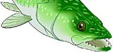
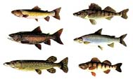
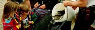
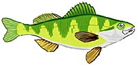

Introduction
Fish of Saskatchewan
Water Adaptation
Fish Classification
Fish Anatomy
|
Introducing the Fish of Saskatchewan

Fish of Saskatchewan  How many types of fish exist in the waters of this province? Where can they be found? Can you identify the more common fish? Check out the fish chart then try the matching activity and test your knowledge. |
|
Adapted to Life in Water
Fish are amazing creatures. They can survive at great depths and in the coldest of waters. Find out how fish have adapted to the aquatic environment. In a deep northern lake in winter, how do fish survive? Under these conditions, is "freezing-to-death" the biggest worry of a fish ?
Classification of Fish  What makes a fish a fish? Did you know that some fish can breathe air and that some species look more like snakes than fish? Find out how scientists classify these organisms.
Internal Anatomy of a Fish  What is inside a perch? How does it breathe, eat, reproduce and respond to its environment? Click here...
|